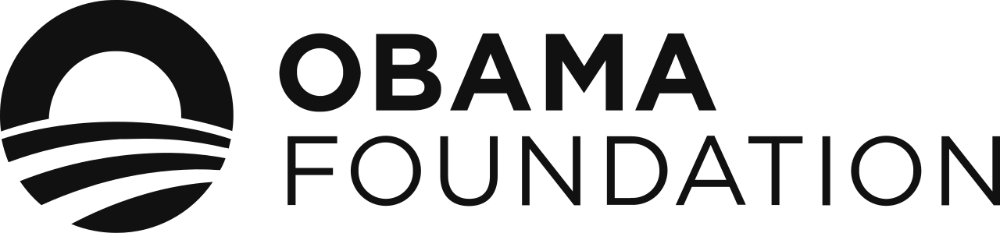

홈 > 브랜드 매거진 > Obama Foundation
Obama Foundation
오바마 재단(The Obama Foundation)은 버락 오바마와 미셸 오바마가 2014년 설립한 비영리 기관으로, 리더십 양성과 지역사회 프로그램(Obama Foundation Leaders, My Brother's Keeper Alliance 등)을 운영한다. 핵심 사업으로 시카고 잭슨파크에 2026년 개관 예정인 오바마 대통령 센터를 준비하고 있다.
산업 분야 브랜드·비즈니스 · 공개 등급 편집 검수 · 브랜드 평가 4 ★

한눈에 보는 브랜드
오바마 재단(The Obama Foundation)은 버락 오바마와 미셸 오바마가 2014년 설립한 비영리 기관으로, 리더십 양성과 지역사회 프로그램(Obama Foundation Leaders, My Brother's Keeper Alliance 등)을 운영한다. 핵심 사업으로 시카고 잭슨파크에 2026년 개관 예정인 오바마 대통령 센터를 준비하고 있다.
브랜드 관점
오바마 재단은 버락 오바마와 미셸 오바마가 세운 비영리 재단으로, 사람들이 자신의 세상을 바꾸도록 영감을 주고 역량을 키우며 서로 연결한다는 사명을 내건다. 본거지는 시카고 사우스사이드이며, 활동은 시카고를 넘어 미국 전역과 세계로 뻗어 있다.
차세대 리더 양성과 시민 참여, 민주주의 가치 확산을 핵심 축으로 삼아, 한 명의 전직 대통령 기념을 넘어 변화를 만드는 글로벌 거점을 지향한다는 점이 재단의 정체성을 규정한다. 비주얼 측면에서도 권위적 기념물보다 개방성과 참여를 강조하는 방향이 일관되게 드러난다.
시작과 성장
재단은 2014년 시카고를 기반으로 설립됐다. 같은 해 2월 버락 오바마 대통령은 흑인 등 유색인종 소년·청년의 기회 격차 해소를 목표로 한 마이 브라더스 키퍼를 출범시켰고, 이 이니셔티브는 이후 재단의 마이 브라더스 키퍼 얼라이언스로 이어졌다.
2016년 7월 재단은 대통령 센터 부지로 시카고 잭슨파크 일부를 선정했다. 잭슨파크는 조경가 프레더릭 로 옴스테드가 1893년 세계 컬럼비아 박람회를 위해 설계한 역사적 공원이다.
미셸 오바마가 시작한 걸스 오퍼튜니티 얼라이언스, 시카고대학교·컬럼비아대학교와 연계한 스칼러스 프로그램 등으로 활동을 넓히며 성장했다.
브랜드 아이덴티티
샌프란시스코·암스테르담 기반 스튜디오 Manual이 대통령 센터 개관에 앞서 리브랜딩을 이끌었으며, 2008년 캠페인의 떠오르는 태양(rising sun) 로고와 Gotham 서체를 계승하되 더 역동적인 표현을 위해 Gotham Condensed를 결합했다. Monotype의 Sara Soskolne와 협업해 Gotham을 확장한 맞춤 변형(Gotham Slab·Stencil·Inline 등)을 제작했고, Gotham Inline Condensed의 줄무늬 형태는 떠오르는 태양 로고를 변주한 것이다.
작은 행동이 큰 변화로 번지는 파급 효과를 표현하는 방사형 기하 패턴과 모션 가이드라인을 도입했으며, 시그니처 색상으로 코발트 블루를 사용한다.
제품과 서비스
핵심 사업은 리더십·장학 프로그램과 대통령 센터다. 오바마 리더스는 지역별 신흥 리더를 6개월간 연결·육성하며, 오바마 재단 스칼러스는 시카고대학교와 컬럼비아대학교에서 차세대 글로벌 리더를 키운다.
에어비앤비 공동창업자 브라이언 체스키의 기부로 운영되는 오바마-체스키 보이저 장학금은 공공 서비스 진로 학생을 지원한다. 잭슨파크에 들어선 오바마 대통령 센터는 박물관, 시카고 공공도서관 분관, 운동·휴식 공간을 갖춘 약 19.3에이커 규모 캠퍼스다.
사람들
현재 상태
오바마 대통령 센터 겸 도서관은 2026년 6월 19일 준틴스에 맞춰 시카고 잭슨파크에서 일반에 공개됐으며, 절반 이상 공간이 무료 개방된다. 재단은 2022년 시작한 연례 민주주의 포럼과 2025-2026년 리더스·스칼러스 신규 기수를 통해 차세대 리더 육성을 이어가고 있다.
타임라인
BI/CI 변천사
함께 읽을 브랜드
Te
Ten
브랜드·비즈니스 · 편집 검수TenTen는 2025년에 기록된 Designed by Paul Belford Ltd 계열의 브랜드 아이덴티티 사례입니다. Paul Belford Ltd가 아이덴티티 작업...
 브랜드·비즈니스 · 편집 검수Peerspace
브랜드·비즈니스 · 편집 검수Peerspace피어스페이스는 미국에서 출발한 시간 단위 공간 대여 마켓플레이스로, 이벤트·회의·촬영·파티 등 목적에 맞는 독특한 공간을 시간당 단위로 예약할 수 있게 연결한다. 공...
Br
Brooklyn Org
브랜드·비즈니스 · 편집 검수Brooklyn Org미국 뉴욕 브루클린의 비영리 커뮤니티 재단으로, 2009년 브루클린 커뮤니티 재단(Brooklyn Community Foundation)으로 출범해 2023년 10월...
Me
Meander Valley
브랜드·비즈니스 · 편집 검수Meander ValleyMeander Valley는 2025년에 기록된 Designed by For the People 계열의 브랜드 아이덴티티 사례입니다. For The People가 아...
Th
The Norton
브랜드·비즈니스 · 편집 검수The Norton더 노턴은 1941년 설립된 미국 플로리다 웨스트팜비치 소재 미술관 노턴 미술관의 브랜드로, 글로벌 크리에이티브 스튜디오 코토(Koto)가 전면 리브랜딩을 맡았다....
 브랜드·비즈니스 · 편집 검수Citibank
브랜드·비즈니스 · 편집 검수Citibank씨티(Citi)는 미국 씨티그룹이 운영하는 글로벌 소비자·기업 금융 브랜드로, 1812년 뉴욕에서 출발한 시티뱅크 오브 뉴욕을 뿌리로 한다. 빨강 아치가 워드마크 위...
Br
Bruce Juice
브랜드·비즈니스 · 편집 검수Bruce JuiceBruce Juice는 2015년에 기록된 Designed by Marx 계열의 브랜드 아이덴티티 사례입니다. Marx Design가 아이덴티티 작업의 디자이너로 기...
 브랜드·비즈니스 · 편집 검수Chime
브랜드·비즈니스 · 편집 검수ChimeChime는 2024년에 기록된 Designed by jkr 계열의 브랜드 아이덴티티 사례입니다. jkr, Marco Palmieri가 아이덴티티 작업의 디자이너로...